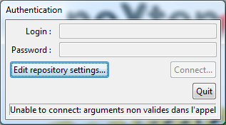
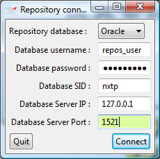
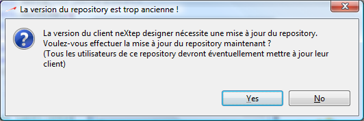
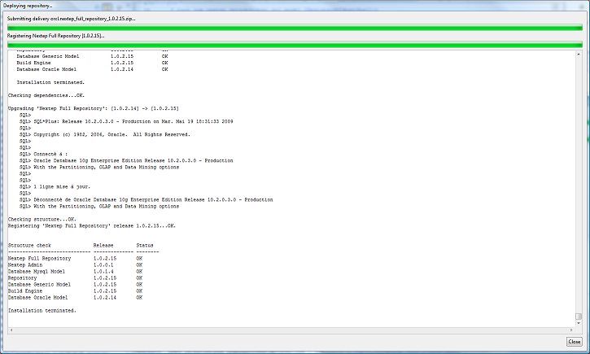
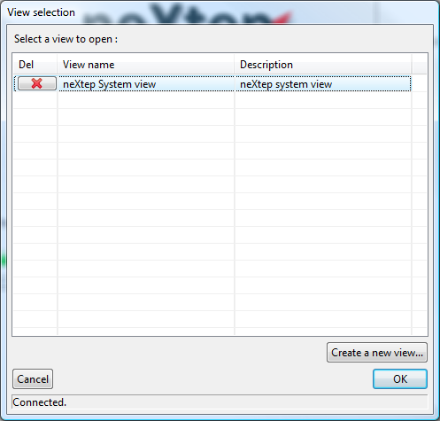
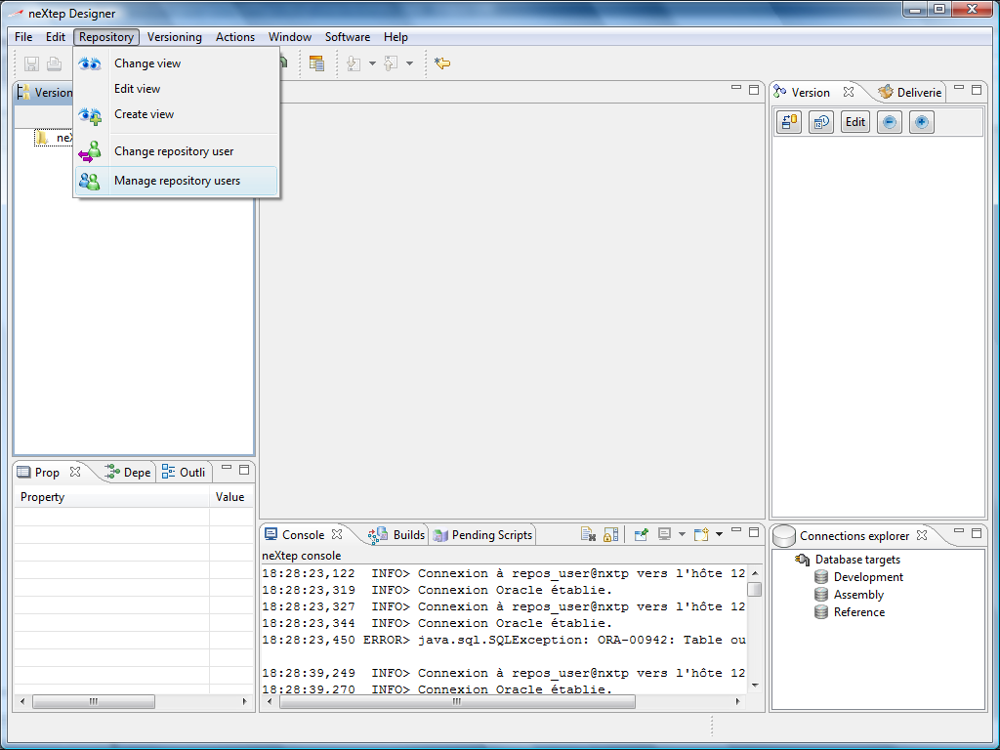
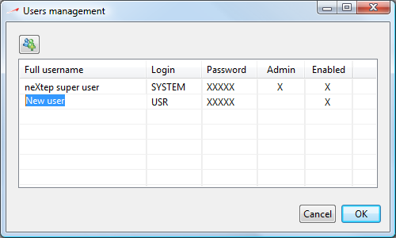

Now that you have a clean empty database to create your repository you can start neXtep Designer.
Please note that IF you make shortcuts to the neXtep binary, you may need to create the shortcut this way :
neXtep -vmargs -Xms128m -Xmx512m
This is because some advanced features of neXtep designer may need some extra memory and because the default 64M is a bit to low for running an Eclipse RCP application. This is the optimal setting.
If you run neXtep through its install location, these settings are already used through the neXtep.ini file.
Run the neXtep binary. You will then see this dialog box :

Press enter or click on “Edit repository settings...” button to define your repository database connection settings.

Installer limitation for Oracle repositories :
The installer has been initially built for local deployments (the installer runs on the database server) and thus does not support correctly TNS aliases which rename the original SID of the database on its server. When you define the repository connection to an Oracle database, please make sure that the SID you define match both the database SID and your local TNS name of the database. If the TNS alias differs from the database SID, you will not be able to install the repository database. We will fix this soon in the future release of the installer which will fully support remote installations.
Enter the information corresponding to your repository database you created at the previous step and click “Connect”. You will then see the following dialog box (the language may change) :

Click “Yes” and you will see the neXtep installer GUI installing your repository. Note that the repository upgrade may also be prompted after you upgrade your neXtep designer client through the automatic updater.

Click “Close”. Congratulations: the repository is installed, you can now use neXtep designer!
Now you will be able to enter your user login / password to connect to the development environment. This information is used by the versioning system to log all your actions in the versions you make.
Your only option here is to connect with the only user yet created :
Login : system
Password : manager
Enter this information and click “Connect”.
If you only want to test the product you may skip directly to the next section “Importing an existing database”, logged as the system user.
You can add users by selecting the “neXtep System view” in the view selection dialog as follows, either by double clicking it or selecting it and click OK.

The neXtep workbench will appear with the empty system view loaded. Please do not delete this view as it may be helpful for maintenance tasks in the future. Now, to edit user information go in the menu Repository > Manage repository users :

The user management dialog will come up, listing the system user. Add as many users as you like with the correct information. You may also want to change the system password for security purposes. You only have to click in a cell to edit its value. You will notice there is only very basic user management here. More options will come in the future, mainly to maintain grants of what user can and cannot do.

This is it, click OK and your users are here. To link properly with the next section, exit neXtep designer and relaunch it, logging it with the user you created.